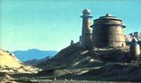
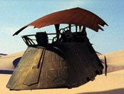
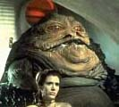

Menu:The Conspirators: |
On the far side of the Dune Sea on a small, insignificant planet lives the galaxy's most notorious and dangerous gangster. Surrounding himself with bounty hunters, assassins, slave girls and smugglers you'd think that Jabba would be wary of the plotting that went on under his nose. Instead the Hutt was unconcerned about these many and varied plots (Bib Fortuna counted fourteen different plots against Jabba's life and sixty five different plots to rob the palace). In fact he was quite arrogant in his dealings with them. He would let them continue for a while but before the plot could be executed, Jabba would capture the traitors. The usual punishment being a trip to the Rancor pit. So when a so-called Jedi Knight and his friends entered his palace he was surprised and unprepared for how this young man could affect him and his criminal empire...
This site is dedicated to some of those plots and conspirators in Jabba's palace who had dreams and aspirations of being rid of the Hutt or some other unfortunate creature in the palace. Some of these plots may have worked; others were doomed to failure from the start. In each section you will find information on the conspirator themselves and their plot. It will also show the outcome of the plot and, in my opinion, whether or not the plot could have worked. Some related links to the official site are also supplied. The plots are from such characters as Mara Jade the Emperor's Hand, Tessk the Quarren, Ree-Yees the Gran, Dannik Jerriko the assassin and Bib Fortuna the Twi'lek and they range from killing a Jedi Knight to stealing from the palace, even killing the Hutt himself. Most of my information came from the books "Tales from Jabba's Palace" - Edited by Kevin J. Anderson and "Star Wars: The Essential Guide to Characters" by Andy Manguels. The pictures of the conspirators also come from this book and were drawn by Michael Butkus. Other pictures are from JediNet.com, GalacticEmpire.net and the Official site. If you are new to "Star Wars" or you haven't read either of these books then I have supplied a small index of characters, creatures and aliens that are mentioned throughout this site. If you see something that you don't understand, go to the Additional Information page and you may find it there.
|
Off Site Links: |